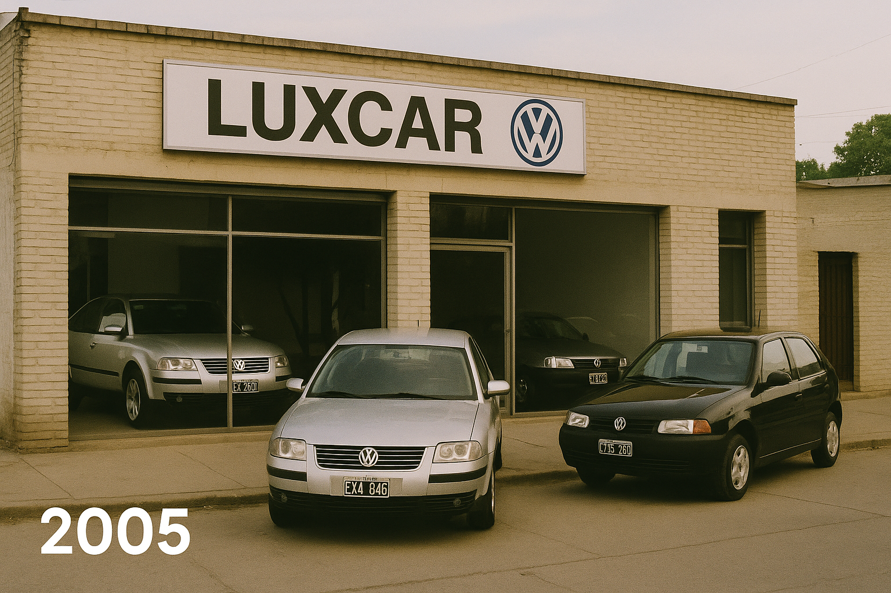

Donde todo arranco con pasion
La historia de nuestra empresa comienza en...Todo gran camino comienza con una idea. En el caso de Luxcar VW, esa idea nació en el corazón de una familia apasionada por los autos, el servicio y la innovación. Corría el año 2005 cuando Juan Carlos Martínez, mecánico de toda la vida y fanático incondicional de Volkswagen, decidió que ya no bastaba con arreglar autos: quería ayudar a las personas a cumplir el sueño de tener el suyo. Desde un pequeño local en las afueras de la ciudad, con apenas dos autos en exhibición y un puñado de clientes fieles, Juan Carlos apostó a algo más grande. Con esfuerzo, compromiso y el respaldo de su familia, fue ganándose la confianza de la comunidad. El boca en boca hizo su magia. En menos de un año, Luxcar empezó a destacarse no solo por ofrecer vehículos Volkswagen, sino por su forma distinta de atender: cercana, transparente y humana. En 2008, Luxcar obtuvo oficialmente la representación de Volkswagen Argentina, marcando un antes y un después. El pequeño local se transformó en una moderna concesionaria con showroom, taller oficial y área de repuestos. Pero el espíritu de los inicios siguió intacto: cada cliente era (y sigue siendo) parte de la familia. Hoy, Luxcar VW es sinónimo de confianza, tecnología y experiencia. Con un equipo profesional en constante formación y una infraestructura a la altura de la marca que representamos, seguimos creciendo sin perder de vista lo más importante: acompañarte en cada kilómetro de tu camino. Luxcar VW. Donde tu historia sobre ruedas comienza.
